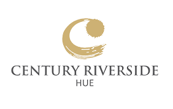

Éducation & Certifications
Spécialité : Acquisition, Analyse et Décision (ACAD) - Applications IA & Data dans l'industrie.
Cours pertinents : Algorithmique et programmation (C, structures de données, complexité algorithmique), Programmation orientée objet (C++), Python, Deep Learning, Qualité et maîtrise statistique des processus (MSP), Bases de données, Maîtrise d'œuvre informatique, Développement d'applications, Probabilités et statistiques, Algèbre linéaire.
Distinctions : 1er Prix aux Olympiades Provinciales de Physique (2021), Prix d'Encouragement au Concours National de Physique (2022).
Expérience Professionnelle

- Prestation de services en hôtellerie et restauration tout en maintenant une qualité de service optimale et la satisfaction des clients.
- Travail dans un environnement collaboratif, favorisant le développement de compétences clés en communication, adaptabilité et gestion du temps.
Projets
- Développement d'un prototype d'inspection visuelle automatisée qui classe des images de pièces de fonderie en OK ou NG (défectueuses) pour appuyer le contrôle qualité.
- Prétraitement d'images avec OpenCV et Transfer Learning sur un ResNet18 pré-entraîné (backbone gelé) sous PyTorch, avec augmentation de données.
- 99,02 % d'accuracy sur 715 images de test ; analyse de la matrice de confusion du point de vue qualité (3 faux positifs, 4 faux négatifs) et piste d'optimisation du seuil de décision.
- Fonctions de traitement d'image (flou gaussien, seuillage, Canny, morphologie) couvertes par 18 tests Pytest ; script d'inférence avec score de confiance.
- Conception d'un chatbot de questions-réponses local et sécurisé utilisant LangChain et Chainlit pour interroger des documents PDF et TXT en garantissant la confidentialité des données.
- Mise en place d'un pipeline RAG avec ChromaDB pour le stockage vectoriel et HuggingFaceEmbeddings, configuré pour s'exécuter sur CPU afin d'économiser les ressources GPU.
- Intégration de Qwen2.5-1.5B-Instruct (quantification 4 bits) via LCEL (LangChain Expression Language) avec l'algorithme de recherche MMR pour extraire un contexte diversifié.
- Développement d'un pipeline complet de Machine Learning pour prédire la probabilité et la classe d'attrition (churn) des clients, optimisant ainsi les stratégies de fidélisation.
- Création d'une architecture de données robuste avec SQLite et implémentation de pipelines de prétraitement utilisant SMOTE lors de la validation croisée pour traiter les jeux déséquilibrés sans fuite de données.
- Entraînement et optimisation de modèles XGBoost, Random Forest et Régression Logistique via GridSearchCV. Intégration de MLflow pour le suivi des expériences et Pytest pour valider le pipeline final.
Compétences Techniques
Vision par ordinateur
OpenCV (filtrage, seuillage, Canny, morphologie), PyTorch / Torchvision, Transfer Learning (ResNet18), classification d'images
Évaluation & Qualité des modèles
Matrice de confusion, précision / recall, analyse des faux positifs et faux négatifs, tests unitaires (Pytest)
Langages
Python, C/C++, SQL (MySQL, SQLite)
LLM & Systèmes Agents
LangChain (LCEL), RAG, Qwen, Hugging Face, Quantification (4-bit)
Machine Learning & Deep Learning
PyTorch, Scikit-learn, XGBoost
Data Science & Analyse
Pandas, NumPy, Matplotlib, Bases de données vectorielles (ChromaDB)
Ingénierie Logicielle & MLOps
Git/GitHub, MLflow, Pytest, Chainlit
Langues & Centres d'intérêt
- Français : Courant (B2 – Attestation TCF )
- Anglais : Courant (895/990 – TOEIC )
- Vietnamien : Langue maternelle
- Volleyball : Membre du club de volley de l'AS INSA CVL, fan de l'équipe nationale masculine du Japon
- Musique : Pop